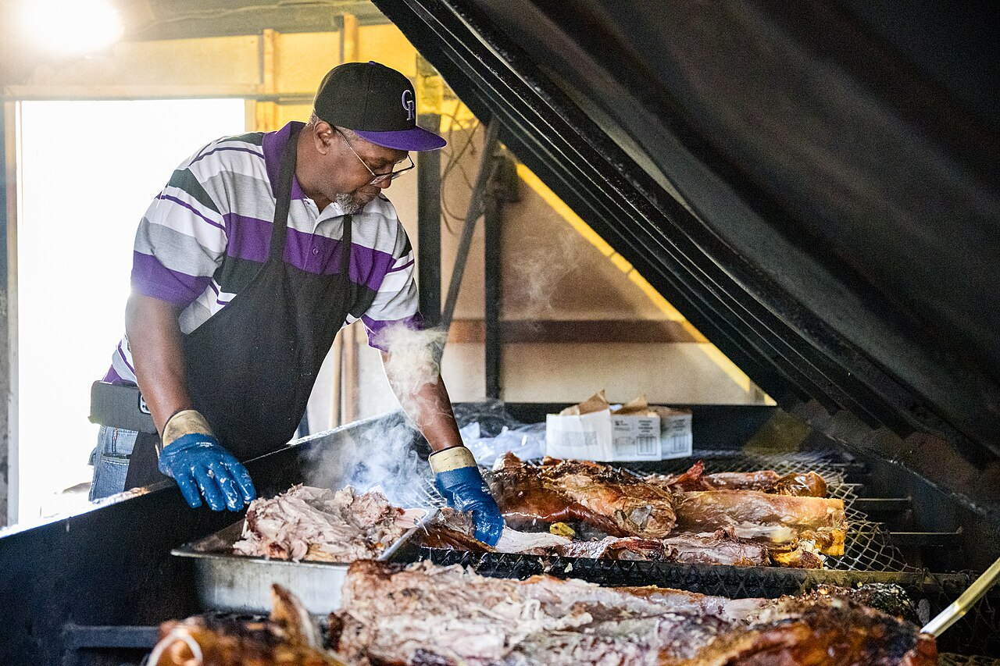
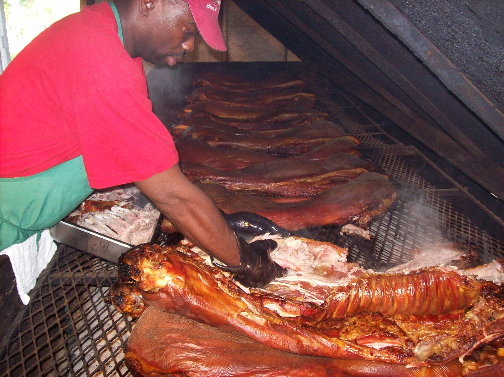
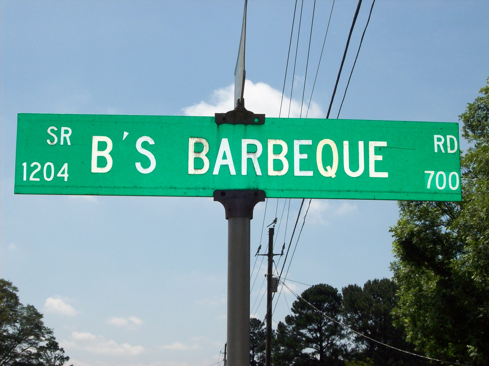

a place · NCB's Barbecue
also: B's · B's Barbeque · B's Bar-B-Q

A whole-hog and chicken pit on the edge of Greenville, Pitt County, in a converted country store on a road the county named for it. Bill McLawhorn, the B, opened it in 1978 with his wife Peggy; their daughters Judy Drach, Tammy Godley and Donna McLawhorn have run it since his death in 2007. There is no telephone, no take-out menu and no closing time: the doors open at nine in the morning and shut when the day's barbecue and chicken are gone, usually early afternoon. Cash or check only. The line forms before opening.
When they are open
Tuesday to Saturday from 9 a.m., until it runs out.
Closes when the meat runs out, whatever the clock says.
open closed not published · Cited · web-ourstate-bs-barbecue · checked 2026-09-16 · why so many close Sunday
The story Cited · web-ourstate-a-day-at-bs
Bill McLawhorn gave up farming in 1978 and bought a convenience store just inside Greenville's city limits; he and Peggy worked out the sauce together and cooked out back, selling up front. He refused a telephone — 'If you need me, come get me' — and the refusal outlasted him. Bob Garner wrote it up for Our State in 2012 as a place of red picnic tables and cafeteria-style counter service with no promise the food would still be there at noon. Judy Drach told the Southern Foodways Alliance in 2009 that the family could have built something bigger with more staff and a day off, 'but when you start doing all that, then it's like any other restaurant and that's not what we wanted it to be.' Bill died in 2007 and the sisters took it on. The pits were once wood-fired brick; after fires the family went over to charcoal, and the pigs go on around nine at night to be ready by nine in the morning. The county renamed the road B's Barbecue Road.
How it is done Cited · web-ourstate-a-day-at-bs
Whole hogs and chickens cook overnight over charcoal, the hogs going on about 9 p.m. The pork is chopped by hand, never ground, and dressed with the McLawhorns' vinegar sauce; the chicken is sold by the half or the whole bird. In 2016 Our State printed the board: barbecue dinner $7.75, sandwich $3.75, a pound $8.50, half a chicken $7, a whole one $11.50. The customer orders at the counter and eats at a picnic table or in the car.
Today Cited · web-ourstate-bs-barbecue
Open Tuesday to Saturday from 9 a.m. until sold out, at 751 B's Barbecue Road, Greenville. No phone. Cash or check. Hours pattern from Our State (2012 and 2016); check before driving.
Facts
| state | NC |
|---|---|
| status | open |
| founded | 1978 |
| fuel | charcoal |
| styles | Eastern North Carolina barbecue |
| region | Eastern North Carolina |
| address | 751 B's Barbecue Rd, Greenville, NC, 27834 · Pitt County Cited · web-ourstate-bs-barbecue |
| where | 35.6209, -77.4174 (street) · OpenStreetMap · open in maps Harvested · osm |
| links | B's Barbecue — SFA oral history with Judy Drach (2009) · B's Barbecue — Our State (2012) · A Day at B's Barbecue — Our State (2016) |
| confidence | high · needs verification · updated 2026-09-16 |
Near here
Miles by road, routed by OSRM on OpenStreetMap data. The finder sorts every pit in both states from where you are.
- 6.2 mi — Sam Jones BBQ Winterville 🐖 Whole hog 🔥 Cooks over wood
- 11.9 mi — Jack Cobb & Son Barbecue Place Farmville ✊🏾 Black-owned 🔥 Cooks over wood 🐖 Whole hog
- 14.4 mi — Bum's Restaurant Ayden 🔥 Cooks over wood 🐖 Whole hog 🍽 Buffet
- 16.2 mi — Skylight Inn BBQ Ayden 🐖 Whole hog 🔥 Cooks over wood 👪 Family-run
- 24.7 mi — Morris Barbeque Hookerton 🐖 Whole hog 📅 Weekends only ⏳ Closes when sold out
Its kin
Who points back
Pictures
{kind=link}

{kind=link}


Sources
- A Day at B's Barbecue — Our State (2016) · link
- A Day at B's Barbecue (Jeremy Markovich, 2016-01-26) · link
- B's Barbecue — Judy Drach, interviewed by Alan G. Pike, 10 Jun 2009 · link
- True 'Cue NC — certified pits · link
- NC Historic Barbecue Trail · link
- Southern Foodways Alliance photographs on Flickr · link
- Flickr — individually licensed photographs · link
Where it came from: Cited a source we name · Harvested pulled from an open dataset · Tradition what the tradition says, hedged · Inference this project's reasoning · Field somebody stood there. This record as JSON.